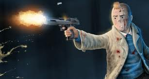
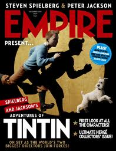
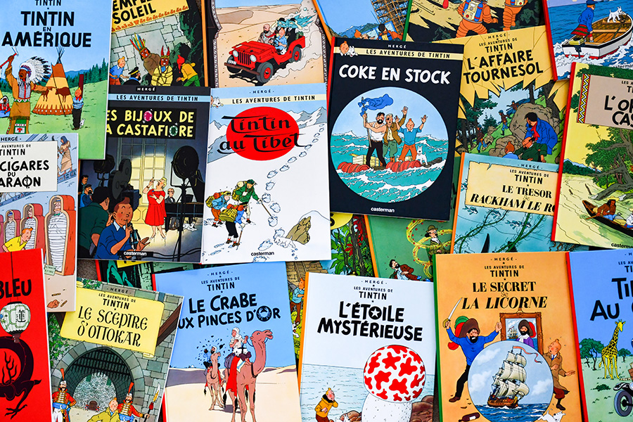

/!\ ALERTE : Tintin est un dangereux criminel /!\ |
||
 |
||
 |
Cette homme que l'on peut voir sur l'image ci-dessus avec son portrait robot,est Tintin le celebre personnage de bande dessine coupable de nombreux crime trés mechant avec vraiment beaucoup de violence de partout à Clichy: |
|
Le braquage a Clichy La Garenne : Une tragédie comme il y en a rarement eu. |
 | |
Hier, aux alentours de 18h30, le quartier de Clichy La Garenne a été le théâtre d'un braquage d'une audace rare, qui semble tout droit sorti d'une aventure de bande dessinée. Une bande de malfaiteurs armés, habillés de tenues sombres et masqués, a pris d'assaut une bijouterie de renom en plein cœur de la ville, sous les yeux ébahis des passants. Selon les premières informations, les criminels auraient agi avec une précision et une rapidité qui laissent penser à un coup longuement prémédité. Mais ce qui rend cet événement particulièrement unique, c'est l'étrange clin d'œil à Tintin, le célèbre reporter de Hergé, que les voleurs semblent avoir voulu intégrer dans leur mode opératoire. Les témoins de la scène, encore sous le choc, ont rapporté des détails surprenants : des casques et tenues semblables à celles portées par les personnages emblématiques de l'univers de Tintin, des phrases échangées |
qui rappellent des répliques de la bande dessinée, et même un graffiti laissé sur les lieux, évoquant les fameuses aventures du jeune reporter. Très vite, les réseaux sociaux se sont enflammés avec le hashtag #BraquageTintin, attirant l'attention de nombreux curieux et fans de la célèbre BD. Cet aspect insolite ajoute une aura presque surréaliste à l'événement, rendant l'affaire encore plus mystérieuse et captivante. La police, dépêchée sur place immédiatement après l'incident, a lancé une enquête approfondie pour retrouver les auteurs de ce vol, dont le butin est estimé à plusieurs milliers d'euros. Des patrouilles et des contrôles renforcés ont été mis en place dans la région, tandis que des images de vidéosurveillance sont en cours d'analyse pour identifier les suspects. La population locale, quant à elle, reste partagée entre crainte et fascination face à cette attaque atypique qui semble avoir transformé Clichy La Garenne en scène de bande dessinée grandeur nature. |
 |
|  | "Une mafia à l'épreuve de tous" : Les voyages mystérieux de Tintin et son empire clandestin |
|
 |
Depuis quelques mois, une série de découvertes troublantes a révélé l'existence d'un réseau criminel aux ramifications mondiales, dirigé par une figure pour le moins inattendue : Tintin, le fameux reporter intrépide qui a marqué des générations. Cette fois-ci, loin de ses aventures héroïques et justicières, il est au centre d'une enquête internationale pour trafic de drogue et constitution de mafia transnationale. D'après les sources policières, Tintin aurait parcouru le monde dans le but de recruter des acolytes stratégiques pour renforcer son empire clandestin. Sous couvert de ses habituels voyages, où il prétendait poursuivre des reportages ou enquêter sur de fausses pistes, Tintin aurait méthodiquement tissé un réseau de contrebande et de trafic de stupéfiants. De l'Amérique du Sud à l'Asie, en passant par l'Afrique et l'Europe de l'Est, il aurait intégré des figures locales influentes et corrompu des officiels, créant ainsi une toile d'opérations si bien structurée qu'elle déjoue jusqu’aux systèmes de sécurité les plus avancés. Des informations provenant d'interceptions |
téléphoniques et de perquisitions à travers le globe ont permis d'établir que chaque région serait spécialisée dans une étape particulière du trafic, de la production à la distribution. Les autorités, confrontées à ce défi de taille, tentent désormais de démanteler cette organisation, baptisée officieusement "La Mafia à l’épreuve de tous". Cette appellation fait référence à la résilience et à l'adaptabilité de ce réseau qui semble anticiper chaque mouvement des forces de l'ordre. Détournant les lois locales, exploitant les failles bureaucratiques, et s’appuyant sur un arsenal de faux papiers, de comptes offshore et de routes commerciales détournées, le réseau étend ses ramifications sous la surface. Désormais, Interpol et plusieurs agences de renseignement collaborent dans l'espoir de mettre fin aux activités du "reporter devenu parrain". Quant au grand public, abasourdi par cette révélation, il observe avec fascination et stupeur la transformation de Tintin, désormais figure énigmatique d’un empire souterrain qui semble invincible. |